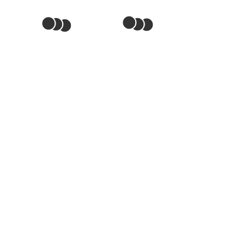

Zellatmung
Citratzyklus

Abb. 1: C-Körperschema des Citratzyklus
Vorangehende Decarboxylierung
- Von den beiden aus der Glykolyse stammenden C3-Körpern Brenztraubensäure wird jeweils Kohlenstoffdioxid abgespalten.
- Es entsteht der C2-Körper aktivierte Essigsäure (Acetyl-CoA), der aktiv vom Zellplasma in die Mitochondrienmatrix transportiert wird.
- Pro Molekül Brenztraubensäure wird
ein Molekül NAD⁺
zu einem Molekül NADH₂⁺ reduziert,
da es sich hier um eine oxidative Decarboxylierung handelt.
Pro Molekül Glucose also doppelt soviele!
Eigentlicher Citratzyklus
- Der C2-Körper aktivierte Essigsäure bindet sich an den als Akzeptor wirkenden C4-Körper Oxalacetat
(= Oxalessigsäure), wobei der namensgebende verzweigte C6-Körper Citrat (Zitronensäure) entsteht.
- Nach mehreren verzweigten C6-Körper Zwischenprodukten wird Kohlenstoffdioxid abgespalten.
- Von einem unverzweigten C5-Körper Zwischenprodukt wird erneut Kohlenstoffdioxid abgespalten.
- Nach mehreren Zwischenschritten entsteht wieder der Akzeptor Oxalacetat.
- Pro Molekül Brenztraubensäure werden in einem Kreisdurchlauf
- drei Moleküle NAD⁺
zu drei Moleküle NADH₂⁺ sowie
- ein Molekül FAD⁺ zu
einem Molekül FADH₂⁺ reduziert.
Pro Molekül Glucose also doppelt soviele!
- Es werden pro Molekül Glucose zwei Moleküle ATP gewonnen.
Externe Links
Citratzyklus
Citratzyklus